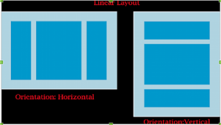
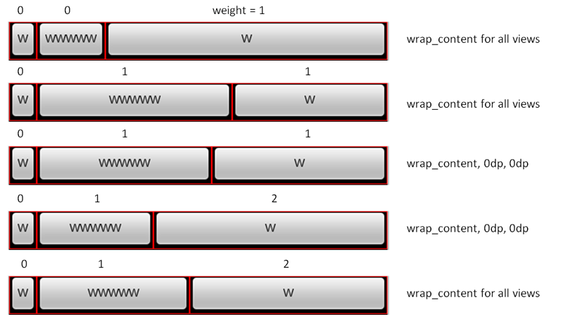
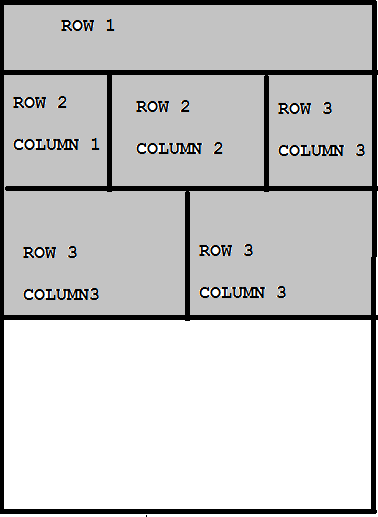
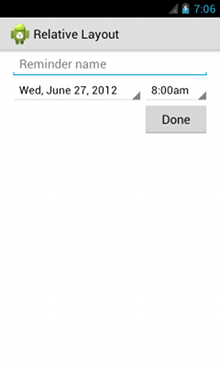
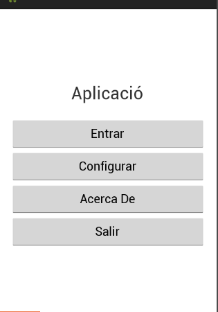

Android
Interfície Usuari Android
Creat per Isaac Muro

UI: User Interface
Les activitats serveixen per interactuar amb l’usuari i mostren la interfície d’usuari
La UI està definida al fitxer main.xml, a la carpeta res/layout del vostre projecte.

Relació entre activity i layout
L’activitat crida al mètode setContentView()
public void onCreate(Bundle savedInstanceState){
super.onCreate(savedInstanceState);
// Mètode que carrega el xml en l'activitat
setContentView(R.layout.main);
}
Creació de la UI
Es pot crear la User Interface (UI) a través de codi o a través d'XML. Es recomana fer-ho a través de XML. Encara que nosaltres utilitzarem el codi Java per crear alguns elements.
Layouts
- LinearLayout
- TableLayout
- RelativeLayout
- ListView
- GridView
Linear Layout
El Linera Layout distribueix els elements un darrera de l'altre, de forma horitzontal o vertical.
Linear Layout Weigth
Table Layout
El Table Layout distribueix els elements en forma de taula. TableRow ens serveix per canviar de fila. Span és una propietat per juntar files o columnes.
Relative Layout
Permet començar a situar els elements en qualsevol de les quatre cantonades, i anar afegint elements enganxats a ells.
activitat
Crea 3 interfícies de calculadora utilitzant els 3 diferents layouts explicats anteriorment.
Activitat
Crea una interfície com la següent. Canvia l'orientació de la interfície a horitzontal i comprova que no es veu bé. Crea un altre directori layout_land per solucionar-ho. En aquest layout, utilitzeu una TableLayout.
Canviar els icones
Per canviar o afegir icones